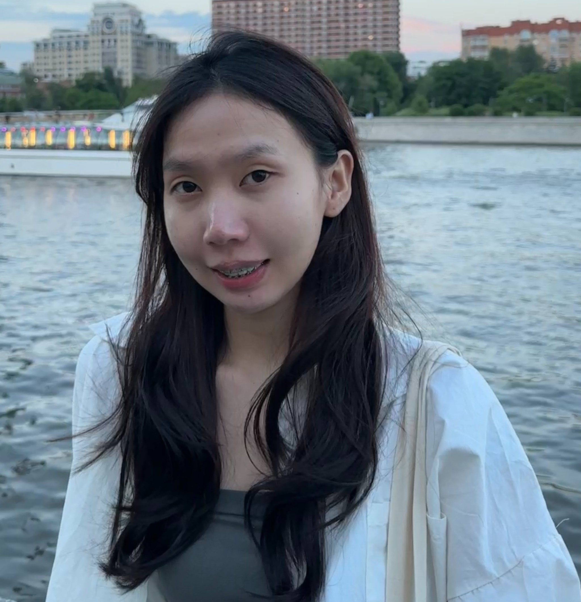
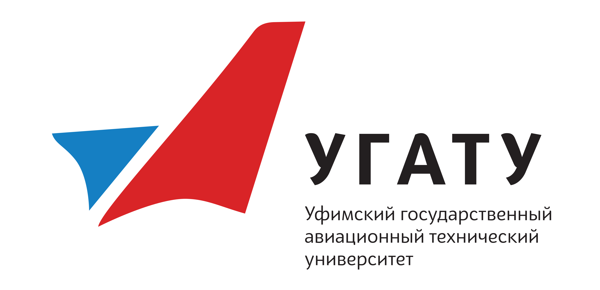

CLIC: Closed-Loop Iterative Communications for Split Inference
R. Kim , A. Dhaouadi, C. Adjih, P. Gu, N. Achir
Inria Research Report RR-9633, 2026
Closed-loop progressive feature transmission for communication-efficient distributed inference.

Master’s Graduate in Computer Networks and IoT Systems
Conservatoire national des arts et métiers (CNAM)
Former Research Intern, Inria Saclay — TRiBE Team
Paris, France
I received my Master’s degree in Computer Networks and IoT Systems from CNAM Paris, where I graduated as major de promotion (top-ranked student in my cohort).
Previously, I completed a research internship within the TRiBE team at Inria Saclay, under the supervision of Dr. Cédric Adjih and Dr. Pengwenlong Gu, working on communication-efficient split inference and adaptive feature transmission.
My research interests lie at the intersection of artificial intelligence, communication networks and distributed systems , particularly distributed AI, edge intelligence, federated learning, intelligent networked systems and resource-efficient computing.
MSc in Computer Networks and IoT Systems
Paris, France
Major de promotion
BSc in Applied Informatics
Moscow, Russia
Bachelor’s thesis: Building a multicast network connection model to analyse the age of received information.

Preparatory Course in Engineering and Russian Language
Ufa, Russia
One-year foundation program in Mathematics, Physics, Informatics, and Russian language.
Research Intern · Palaiseau, France
Developed a closed-loop progressive feature transmission framework and evaluated feature completion, learned request selection and adaptive stopping for split inference.
Research Intern · Paris, France
Investigated federated learning for distributed anomaly-classification tasks using centralized and federated baselines.
Research Intern · Moscow, Russia
Developed a two-class resource-constrained multicast service model and analysed loss probability and resource occupancy.
Research Intern · Moscow, Russia
Studied multiservice communication networks using Markov and queueing-based models.
Inria · 2026
Adaptive feature transmission and completion for semantic segmentation under communication constraints.
DINOv2 · PyTorch · Edge AI
2026
Lightweight reconstruction models for classification with incomplete information.
Machine Learning · Feature Reconstruction
CEDRIC · 2025
Centralized and federated baselines, convergence and communication–accuracy trade-offs.
PyTorch · FedAvg · FedProx
2025
Evaluation of packet delivery ratio, latency and communication performance.
Contiki-NG · Cooja
2024
Reproducible experiments on throughput, latency, jitter, packet loss and traffic shaping.
Mininet · iPerf3 · NetEm
RUDN · 2024
Resource-constrained service models for multicast traffic in 5G/mmWave networks.
Python · Queueing Theory
R. Kim , A. Dhaouadi, C. Adjih, P. Gu, N. Achir
Inria Research Report RR-9633, 2026
Closed-loop progressive feature transmission for communication-efficient distributed inference.
F. A. Moskaleva, R. Kim , P. Kean
ITTMM 2024, pp. 94–97
Best Paper Award
Mathematical modelling of resource-constrained multicast traffic.